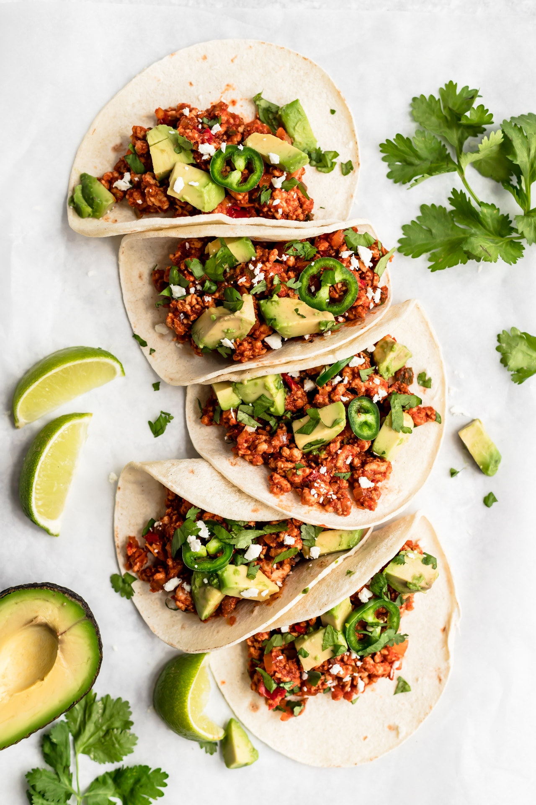
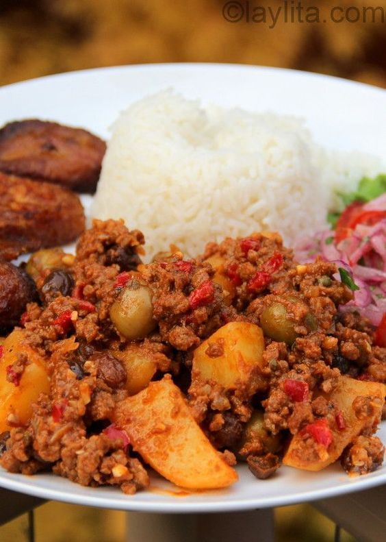

Some of our features

Breakfast
Start your day off with some of our traditional breakfasts enjoyed in different Latin countires.

Lunch
Looking for a quick and delicious bite? Check out some of these typical latin american lunches.

Dinner
Not sure what to make for dinner? Having a dinner party & want to impress your dinner guests? Check this out!